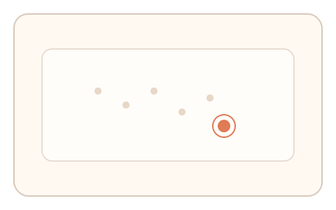
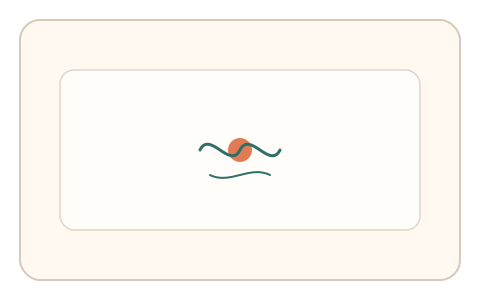
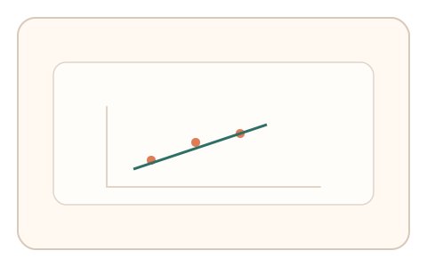

#139
E：双底座耦合 × 双信号 × 多阶段/双任务（认知偏置 + 生理/时域）
已扩展
显著性‑微纠偏联动
先点击最显著点，再进行短时微追踪，关联显著性分布与纠偏频率。
概念原文
用户先点击最显著点，再进行 2 秒微追踪，系统比较显著性分布与微纠偏频率的相关性并做异常检测。
把注意力组织方式与生理纠偏绑定。
研究背景
视觉显著性会引导注意力与初始选择，而短时微追踪包含生理性纠偏。将注意力组织与微运动噪声结合可形成双信号。
核心机制
- 展示复杂场景并要求点击最显著位置。
- 随后在局部区域进行 2 秒微追踪。
- 记录显著性选择与纠偏频率。
- 比较注意力选择与微纠偏的一致性。
用户流程
- 步骤 1：用户选择最显著目标。
- 步骤 2：保持并微追踪短时间。
- 步骤 3：系统分析选择与纠偏特征。
判定信号
显著性选择位置
注意力偏好反映显著性分布。
微纠偏频率与抖动
人类微运动存在稳定噪声结构。
判定逻辑
选择位置需匹配显著性热点且纠偏频率在基线区间；过度平滑或偏离判异常。
对抗面
- 脚本计算显著性并直接点击
- 生成平滑追踪路径并回放
防御与缓解
- 随机化场景与显著性线索
- 加入动态扰动与遮挡
- 综合反应时与停顿信号
可达性与风险
提供高对比与放大模式，允许替代点击方式。
- 设备平滑影响纠偏信号
- 注意力分散导致选择偏差
可视化状态

状态 1：显著性选择
在多点中选择最显著目标。

状态 2：微追踪
局部微追踪并记录纠偏。

状态 3：联动判定
比较显著性与纠偏特征。
参考资料
Saliency map
说明视觉显著性与注意力分布。
Physiological tremor
说明微运动噪声特征。